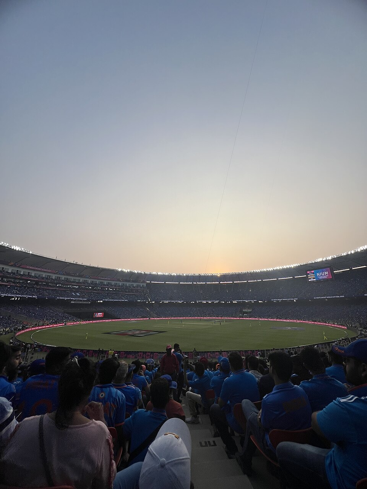
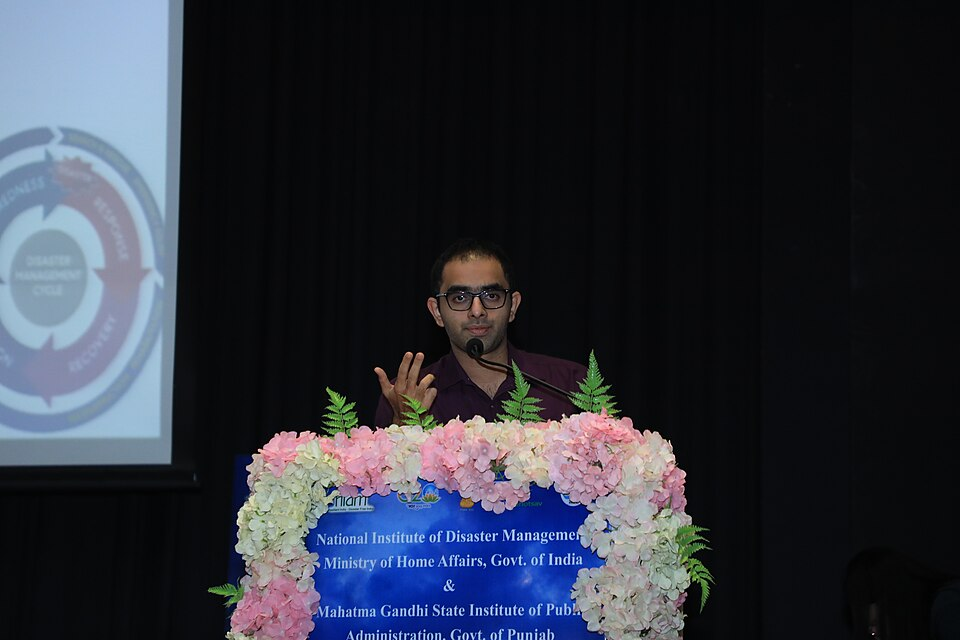

NEET-UG 2026 पेपर लीक मामला: सभी 14 आरोपियों ने कोर्ट में खुद को बेकसूर बताया, 25 नवंबर से ट्रायल शुरू
NEET-UG 2026 पेपर लीक मामले में राऊज एवेन्यू कोर्ट ने सभी 14 आरोपियों पर आरोप तय कर दिए हैं। आरोपियों ने खुद को बेकसूर बताया है, जिसके बाद अदालत ने 25 नवंबर से रोजाना ट्रायल शुरू करने का निर्देश दिया है।
ताज़ा ख़बरें
मेरठ नीला ड्रम हत्याकांड: फांसी की सजा काट रही मुस्कान को सता रही बेटी की याद
मेरठ के चर्चित नीला ड्रम हत्याकांड में फांसी की सजा पाने वाली मुस्कान जेल में अपनी बड़ी बेटी से मिलने की इच्छा जता रही है। वहीं, वकीलों के पैनल ने जेल पहुंचकर दोनों दोषियों से मुलाकात की है।
 राष्ट्रीय
राष्ट्रीयक्रिकेट में चयन प्रदर्शन के आधार पर होना चाहिए: इमरान मसूद
मोहम्मद सिराज को बाहर किए जाने को लेकर दिए गए बयान पर विवाद के बाद कांग्रेस सांसद इमरान मसूद ने सफाई दी है। उन्होंने कहा कि टीम चयन केवल प्रदर्शन के आधार पर होना चाहिए।
राष्ट्रीयसंगीतकार अनिरुद्ध रविचंदर और काव्या मारन आज चेन्नई में देंगे रिसेप्शन
म्यूजिक कंपोजर अनिरुद्ध रविचंदर और बिजनेसवुमन काव्या मारन 21 नवंबर को चेन्नई में अपने विवाह का रिसेप्शन दे रहे हैं। दोनों ने 11 नवंबर को ग्रीस में शादी की थी।
राष्ट्रीयगिरिडीह में सफाईकर्मी की मौत के बाद शव वाहन न मिलने पर कचरा गाड़ी से ले जाया गया शव
झारखंड के गिरिडीह में एक सफाईकर्मी की मौत के बाद कथित तौर पर शव वाहन उपलब्ध नहीं हुआ, जिसके बाद शव को कचरा ढोने वाले वाहन से घर ले जाया गया। स्थानीय प्रशासन और व्यवस्था पर सवाल उठे हैं।

राष्ट्रीयअहमदाबाद कॉन्सर्ट से पहले दिलजीत के चार गानों पर रोक की मांग
अहमदाबाद में होने वाले दिलजीत दोसांझ के कॉन्सर्ट से पहले एक प्रोफेसर ने शराब और हिंसा को बढ़ावा देने वाले चार गाने न गाने की मांग की है। वहीं, सुरक्षा के लिए दो हजार जवान तैनात किए गए हैं।
 खेल
खेलऑस्ट्रेलिया ने पहले टी20 में इंग्लैंड को हराया, निखिल चौधरी का शानदार अर्धशतक
मेलबर्न में खेले गए पहले टी20 मैच में ऑस्ट्रेलिया ने इंग्लैंड को 3 विकेट से हरा दिया है। भारतीय मूल के खिलाड़ी निखिल चौधरी ने ऑस्ट्रेलिया की ओर से खेलते हुए शानदार अर्धशतक जड़ा।
व्यापारदिल्ली-एनसीआर में बढ़ा एयर प्यूरिफ़ायर का बाज़ार, प्रदूषण के कारण मांग में इज़ाफ़ा
दिल्ली-एनसीआर में बढ़ते वायु प्रदूषण के बीच घरों में एयर प्यूरिफ़ायर की मांग तेजी से बढ़ी है। बाज़ार में इनकी बिक्री में उछाल देखा जा रहा है और वित्त वर्ष 2030 तक इस बाज़ार के काफ़ी बढ़ने का अनुमान है।
 अंतरराष्ट्रीय
अंतरराष्ट्रीयसंयुक्त राष्ट्र में AI किलर रोबोट पर रोक के प्रस्ताव पर दो देशों की असहमति
संयुक्त राष्ट्र में स्वायत्त हथियारों और AI किलर रोबोट के इस्तेमाल पर रोक लगाने के प्रस्ताव पर चर्चा के दौरान दो देशों ने असहमति जताई, जबकि 128 देशों ने इसका समर्थन किया।
राष्ट्रीयकौन बनेगा करोड़पति 18: जलगांव के भूषण ठाकरे बने सीजन के पहले करोड़पति
लोकप्रिय क्विज शो 'कौन बनेगा करोड़पति 18' में जलगांव के भूषण ठाकरे इस सीजन के पहले एक करोड़ रुपए जीतने वाले प्रतियोगी बन गए हैं। वे अब सात करोड़ रुपए के सवाल का सामना करेंगे।
राष्ट्रीयजननायक एक्सप्रेस में सीट को लेकर विवाद, जीआरपी और यात्रियों में मारपीट
अमृतसर जा रही जननायक एक्सप्रेस में सीट को लेकर हुए विवाद में जीआरपी और यात्रियों के बीच मारपीट हो गई। पुलिस ने सरकारी काम में बाधा डालने का मामला दर्ज किया है।
 राष्ट्रीय
राष्ट्रीयराजस्थान पंचायत चुनाव में कांग्रेस का शानदार प्रदर्शन, बीजेपी को झटका
राजस्थान पंचायत चुनावों में कांग्रेस पार्टी ने मजबूत प्रदर्शन करते हुए जिला परिषद और पंचायत समिति चुनावों में बड़ी जीत हासिल की है, जिससे बीजेपी को बड़ा झटका लगा है।
राष्ट्रीयतमिलनाडु के नागरकोइल में महिला से दुष्कर्म और हत्या, छह घंटे में आरोपी गिरफ्तार
तमिलनाडु के नागरकोइल रेलवे यार्ड में एक खाली कोच से 54 वर्षीय महिला का शव बरामद हुआ। पुलिस ने त्वरित कार्रवाई करते हुए छह घंटे के भीतर आरोपी को गिरफ्तार कर लिया।
राष्ट्रीयतमिलनाडु के नागरकोइल में महिला से दुष्कर्म और हत्या, छह घंटे में आरोपी गिरफ्तार
तमिलनाडु के नागरकोइल रेलवे यार्ड में एक खाली कोच से 54 वर्षीय महिला का शव बरामद हुआ। पुलिस ने त्वरित कार्रवाई करते हुए छह घंटे के भीतर आरोपी को गिरफ्तार कर लिया है।
राष्ट्रीयसियांग घाटी मेगा बांध परियोजना: अमित शाह ने अरुणाचल के लोगों को दिया बातचीत का भरोसा
केंद्रीय गृह मंत्री अमित शाह ने अरुणाचल प्रदेश की सियांग घाटी में प्रस्तावित मेगा बांध परियोजना को लेकर स्थानीय लोगों की चिंताओं को बातचीत के जरिए दूर करने का आश्वासन दिया है।
राष्ट्रीयराजस्थान की राजनीति में आरएलपी का प्रवेश और हनुमान बेनीवाल का सफर
क्षेत्रीय दलों के लिए कठिन माने जाने वाले राजस्थान में राष्ट्रीय लोकतांत्रिक पार्टी ने अपनी जगह बनाई है। पार्टी प्रमुख हनुमान बेनीवाल के सामने अब इस राजनीतिक आधार को आगामी विधानसभा चुनावों में भुनाने की चुनौती है।
राष्ट्रीयबिहार में घोटालों की जगह अब निवेश की चर्चा: वैशाली में पीएम मोदी
प्रधानमंत्री नरेंद्र मोदी ने बिहार में पिछले शासनकाल पर निशाना साधते हुए कहा कि राज्य अब घोटालों और अपराध के दौर से निकलकर निवेश और विकास की राह पर आगे बढ़ चुका है।
राष्ट्रीयश्रावणी राणे और मोहम्मद फ़ैज़ मामला: बॉम्बे हाईकोर्ट और ज़मानत से जुड़े विवाद की पूरी ख़बर
अक्तूबर 2026 में विशेष विवाह अधिनियम के तहत शादी करने वाले श्रावणी राणे और मोहम्मद फ़ैज़ के मामले में अदालत ने पति को अग्रिम ज़मानत दे दी है। पत्नी ने जबरन धर्मांतरण के आरोपों को खारिज किया है।
राष्ट्रीयहर कोई IAS नहीं बन सकता, स्किल डेवलपमेंट और व्यावहारिक ज्ञान जरूरी: अवध ओझा
आजतक मास्टरक्लास 2026 में यूपीएससी कोच अवध ओझा ने कहा कि युवाओं को सिर्फ डिग्री के पीछे भागने के बजाय व्यावहारिक कौशल और समस्याओं को सुलझाने की क्षमता पर ध्यान देना चाहिए।
 अंतरराष्ट्रीय
अंतरराष्ट्रीयअमेरिका: दक्षिणी कैलिफोर्निया में मालगाड़ियों से 208 करोड़ की चोरी, 14 आरोपी
अमेरिका के दक्षिणी कैलिफोर्निया में मालगाड़ियों से करीब 208 करोड़ रुपये का सामान चोरी करने के मामले में अमेरिकी न्याय विभाग ने 14 लोगों पर केस दर्ज किया है।
राष्ट्रीयसलमान खान ने 'दबंग 4' में चुलबुल पांडे के रूप में वापसी की पुष्टि की
अभिनेता सलमान खान ने अपनी लोकप्रिय फिल्म फ्रेंचाइजी 'दबंग' के चौथे हिस्से की पुष्टि कर दी है। उन्होंने इसके साथ ही 'बजरंगी भाईजान 2' को लेकर भी अपनी बात रखी है।
राष्ट्रीयफिल्म 'पद्मावत' की शूटिंग के दौरान रणवीर सिंह को पड़े थे 24 थप्पड़
दिग्गज अभिनेता रजा मुराद ने एक इंटरव्यू में खुलासा किया है कि फिल्म 'पद्मावत' के एक सीन को परफेक्ट बनाने के लिए रणवीर सिंह को 24 बार थप्पड़ खाने पड़े थे, जिससे उनका गाल सूज गया था।
राष्ट्रीयगोरखपुर में तेज रफ्तार ट्रक की टक्कर से हाथी की मौत, महावत घायल
उत्तर प्रदेश के गोरखपुर में एनएच-24 पर तेज रफ्तार ट्रक की टक्कर से सड़क किनारे चल रहे एक हाथी की मौके पर ही मौत हो गई, जबकि महावत और एक अन्य युवक गंभीर रूप से घायल हो गए।
 राष्ट्रीय
राष्ट्रीयप्रधानमंत्री नरेंद्र मोदी ने बिहार में नीतीश सेतु का किया उद्घाटन
प्रधानमंत्री नरेंद्र मोदी ने बिहार के वैशाली और पटना के बीच गंगा नदी पर बने नीतीश सेतु का उद्घाटन किया है। इससे दोनों जिलों के बीच आवागमन सुगम होगा और करोड़ों रुपये की परियोजनाओं की सौगात मिलेगी।
अंतरराष्ट्रीयदादा साहब फाल्के अंतरराष्ट्रीय फिल्म फेस्टिवल 2026: 'धुरंधर' और 'सैय्यारा' का जलवा
दादा साहब फाल्के अंतरराष्ट्रीय फिल्म फेस्टिवल 2026 के विजेताओं की घोषणा कर दी गई है। फिल्म 'धुरंधर' और 'सैय्यारा' ने सबसे ज्यादा पुरस्कार जीते हैं।
राष्ट्रीयप्रधानमंत्री नरेंद्र मोदी ने बिहार के वैशाली में ₹4,280 करोड़ की लागत वाले 'नीतीश सेतु' का किया उद्घाटन
प्रधानमंत्री नरेंद्र मोदी ने शनिवार को बिहार के वैशाली और पटना को जोड़ने वाले छह लेन के 'नीतीश सेतु' का उद्घाटन किया। ₹4,280 करोड़ की लागत वाले इस पुल के नामकरण को लेकर सत्ता पक्ष और आरजेडी के बीच राजनीतिक बयानबाजी शुरू हो गई है।
खेलसूर्यकुमार यादव फिलहाल टी20 टीम की योजनाओं में शामिल नहीं: बीसीसीआई सूत्र
घरेलू क्रिकेट में शानदार प्रदर्शन के बावजूद सूर्यकुमार यादव को लेकर बीसीसीआई के एक सूत्र ने दावा किया है कि वह फिलहाल भारतीय टी20 टीम की योजनाओं का हिस्सा नहीं हैं।
राष्ट्रीयबिहार में कच्ची दरगाह-बिदुपुर ब्रिज के नामकरण और उद्घाटन पर सियासी घमासान
प्रधानमंत्री नरेंद्र मोदी द्वारा उद्घाटन किए जाने वाले कच्ची दरगाह-बिदुपुर 6 लेन ब्रिज का नाम 'नीतीश सेतु' रखे जाने पर बिहार में राजनीतिक विवाद शुरू हो गया है। विपक्ष ने नाम बदलने और दोबारा उद्घाटन का आरोप लगाया है।
राष्ट्रीयसलमान खान ने की 'दबंग 4' की पुष्टि, जल्द शुरू होगी नई फिल्म
बॉलीवुड अभिनेता सलमान खान ने अपनी लोकप्रिय फ्रेंचाइजी 'दबंग' के चौथे हिस्से की पुष्टि कर दी है। अभिनेता इन दिनों अपनी आगामी फिल्म 'मातृभूमि' के प्रमोशन में व्यस्त हैं।
राष्ट्रीयबिजनौर में जननायक एक्सप्रेस में सीट को लेकर विवाद, जीआरपी सिपाहियों पर महिला से मारपीट का आरोप
उत्तर प्रदेश के बिजनौर में नजीबाबाद के पास जननायक एक्सप्रेस में सीट को लेकर हुए विवाद में जीआरपी के दो सिपाहियों पर एक महिला के साथ मारपीट करने का आरोप लगा है। घटना का वीडियो सोशल मीडिया पर वायरल हो रहा है।
 राष्ट्रीय
राष्ट्रीयवाराणसी के नमो घाट पर 'भजन क्लबिंग' का आयोजन, पीएम मोदी ने की युवाओं के उत्साह की सराहना
वाराणसी के नमो घाट पर चार दिवसीय गंगा महोत्सव के दौरान 'भजन क्लबिंग' का आयोजन किया गया। आधुनिक बीट्स पर पारंपरिक भजनों के इस कार्यक्रम में युवाओं ने भारी उत्साह दिखाया, जिसकी प्रधानमंत्री नरेंद्र मोदी ने सराहना की है।
राष्ट्रीयबीजेपी सांसद निशिकांत दुबे ने सोनिया गांधी और मारुति से जुड़े मामलों पर उठाए सवाल
बीजेपी सांसद निशिकांत दुबे ने सोनिया गांधी की मारुति से जुड़ी कंपनियों में हिस्सेदारी और पुरानी कांग्रेस सरकारों के दौरान फैसलों को लेकर कई गंभीर सवाल उठाए हैं।
 टेक
टेकबैंकिंग सेक्टर पर बढ़ा साइबर हमलों का खतरा, एआई और सुरक्षा टीमों में जंग
साइबर सुरक्षा विशेषज्ञों ने चेतावनी दी है कि एआई से लैस हैकरों और बैंकों की आईटी टीमों के बीच संघर्ष तेज हो गया है। जावा और अन्य तकनीकी खामियों के कारण भारतीय बैंकिंग व्यवस्था प्रभावित हो सकती है।
राष्ट्रीयहैदराबाद में मेटा दफ्तर पर यूथ कांग्रेस का प्रदर्शन, 21 कार्यकर्ता हिरासत में
भारतीय युवा कांग्रेस के नेताओं के इंस्टाग्राम अकाउंट रोके जाने के विरोध में हैदराबाद, मुंबई और गुरुग्राम स्थित मेटा कार्यालयों पर प्रदर्शन किया गया। हैदराबाद में तोड़फोड़ के बाद प्रदेश अध्यक्ष समेत 21 कार्यकर्ता हिरासत में लिए गए।
 राष्ट्रीय
राष्ट्रीयकश्मीर घाटी में कोई स्थानीय आतंकी नहीं बचा, अमित शाह का बयान
केंद्रीय गृह मंत्री अमित शाह ने कहा कि कश्मीर घाटी में अब कोई स्थानीय आतंकवादी सक्रिय नहीं है। पुलवामा और कुलगाम में हालिया मुठभेड़ों में लश्कर-ए-तैयबा के स्थानीय आतंकियों के मारे जाने के बाद अब केवल पाकिस्तानी आतंकी बचे हैं।

राष्ट्रीयकश्मीर में अब कोई स्थानीय आतंकवादी सक्रिय नहीं: अमित शाह
केंद्रीय गृह मंत्री अमित शाह ने अरुणाचल प्रदेश में कहा कि अनुच्छेद 370 हटने के बाद कश्मीर में अलगाववाद खत्म हुआ है और घाटी में अब केवल विदेशी आतंकवादी ही बचे हैं।
अंतरराष्ट्रीयगुरपतवंत सिंह पन्नू हत्या साजिश मामला: निखिल गुप्ता को अमेरिका में 19 साल से अधिक की सजा
अमेरिकी अदालत ने खालिस्तानी अलगाववादी गुरपतवंत सिंह पन्नू की हत्या की साजिश से जुड़े मामले में भारतीय नागरिक निखिल गुप्ता को करीब 19 साल 7 महीने की सजा सुनाई है।
अंतरराष्ट्रीयपुतिन, ट्रंप और जिनपिंग की शेनझेन बैठक को रूस ने बताया ऐतिहासिक
रूस ने पुतिन, ट्रंप और जिनपिंग की त्रिपक्षीय बैठक को वैश्विक राजनीति में बदलाव का संकेत बताया है। हालांकि, इस बीच यूक्रेन पर रूसी हमले जारी हैं और शांति दावों पर सवाल उठ रहे हैं।
राष्ट्रीयमणिपुर के चंदेल जिले में जहरीली शराब पीने से 14 लोगों की मौत
मणिपुर के चंदेल जिले में जहरीली शराब पीने से 14 लोगों की जान चली गई है, जबकि 300 से अधिक लोगों को विभिन्न अस्पतालों में भर्ती कराया गया है। प्रशासन ने मेथनॉल विषाक्तता की आशंका जताई है।
व्यापारगौतम अडानी ने वित्त वर्ष 2025-26 में दिए 877 करोड़ रुपये, बने देश के दूसरे सबसे बड़े दानदाता
एडेलगिव हुरुन इंडिया फिलैंथ्रोपी लिस्ट 2026 के अनुसार, गौतम अडानी और उनके परिवार ने वित्त वर्ष 2025-26 में ₹877 करोड़ का दान दिया है। पिछले साल के मुकाबले उनके दान में 127 प्रतिशत की बढ़ोतरी हुई है और वह देश में दूसरे स्थान पर हैं।